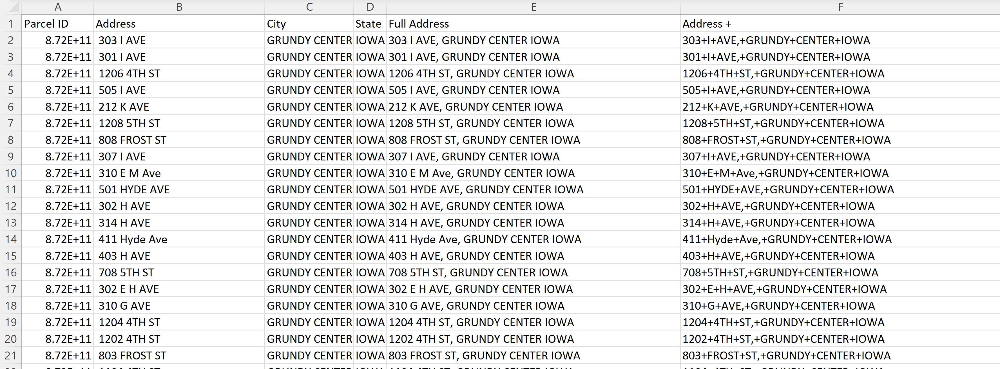
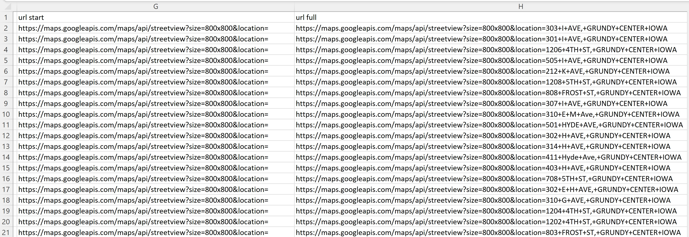
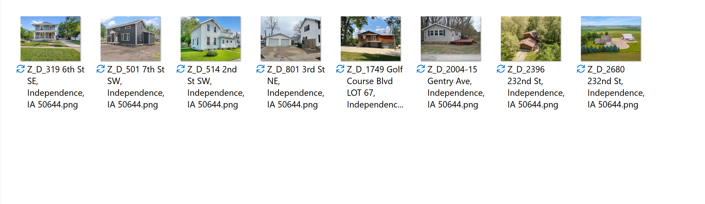

Week 4
This week was all about data collection and cleaning. We started off by using Microsoft Excel to clean housing data collected from week three. I used several functions to parse data and create URLs to grab images of houses using Google API. Here are some things I learned:
Using Functions in Excel
I worked on making changes to the the housing datasets for Grundy Center, Iowa. The format was different than what we needed, so using Excel’s Text-to-Columns I was able to fix the format.
I also used a function to separate parcel ID and address:
=TRIM(CLEAN(SUBSTITUTE(A1,CHAR(160),” “)))
I also used text to column to separate names from addresses. I also needed to create urls from the addresses. To create the address uls in excel, I put + signs in between the address spaces by using this:
=substitute(trim(cell),” “,”+“)
To combine the address with the first part of the URL, I use
=cell&cell


When we click on one of the URL links (after adding an API Key to complete the URL), an image of the house appears. This is the house specified in the address.
For example, I take the URL from cell D2. The image is of a house from the URL of cell D2.

We hope to use these images to help train our AI models.
Web Scraping
We had to re-prioritize scraping certain sources because some (Beacon and Vanguard) are protected while others (Zillow, Trulia) are not. We also learned that Trulia is owned by Zillow so our plans to scrape both changed as well. We now aim to scrape data from Zillow and Realtor.com, then find out if there are ways to scrape Beacon and Vanguard legally. The web scraping has been difficult this week, but as we make more progress we will be able to get more images and housing information from online.
During week four I spent time finding ways to scrape the Zillow website. I tried to follow different tutorials and read more about web scraping. By Friday I was finally able to successfully scrape images of houses and addresses for Independence, IA on Zillow. This was the first time I was actually able to successfully scrape something.
I got the base code from my one of the housing team members, Gavin.
Images have now been downloaded on my personal computer.

My Thoughts on Week 4
The weeks are going by pretty fast, but week four felt like one long day because I mostly worked on trying to figure out how to web scrape websites. Figuring out how to web scrape was long, and oftentimes I was stuck. But I am glad I was able to make some progress and get help from others on my team.
Things to Work On
Next week I plan to get more comfortable with AI concepts so that I can begin building an AI model for the project.